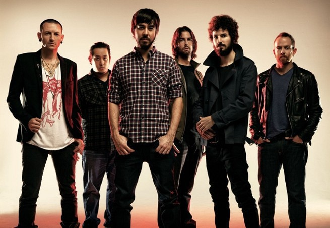
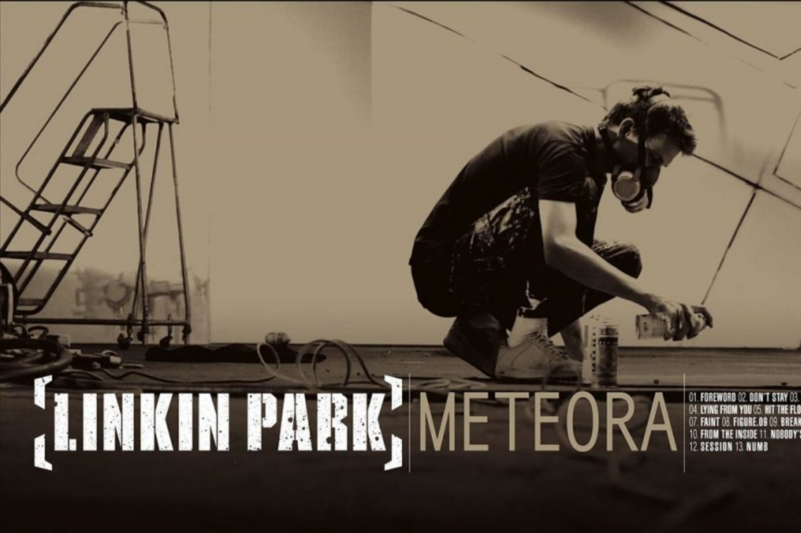
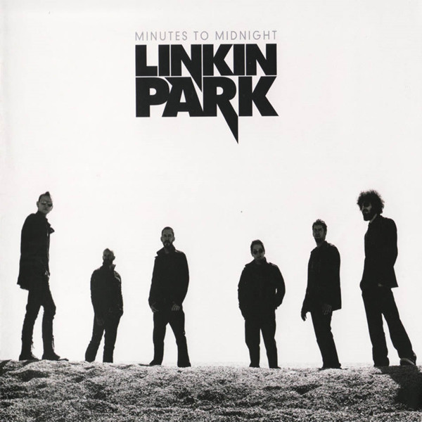
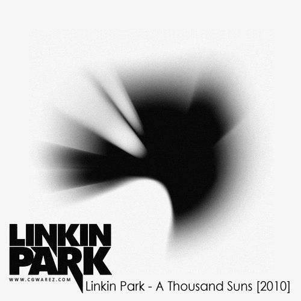
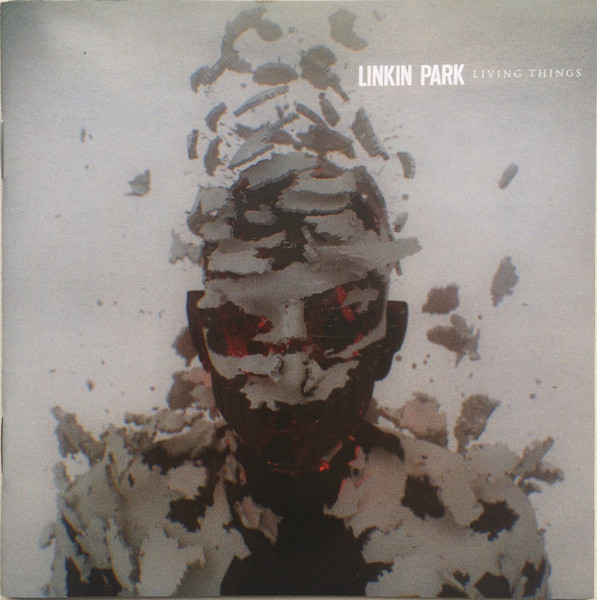
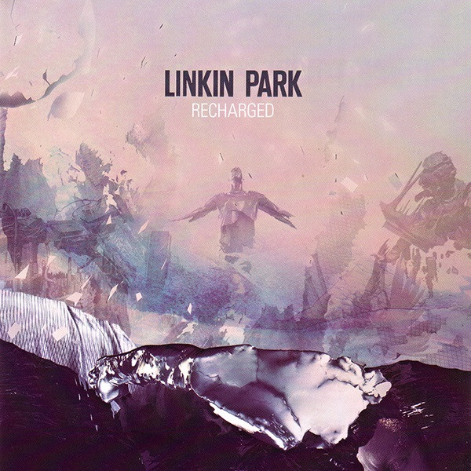
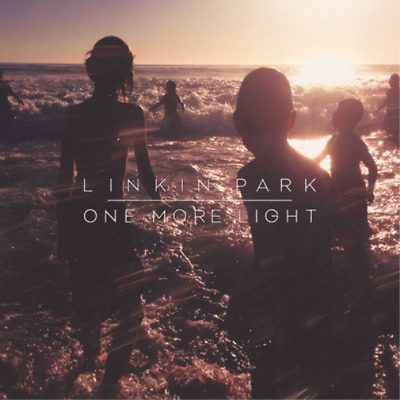

Linkin Park es una banda estadounidense de rock procedente de Agoura Hills, California.
Formada
en 1996, el grupo
estuvo inicialmente integrado por Mike Shinoda, Dave Farrell, Joe Hahn, Brad Delson, Rob Bourdon y Mark
Wakefield, este último como voz principal. La banda inició en ese mismo año sus primeros trabajos
musicales
de
manera independiente y posterior a esto grabaron su primer material llamado Xero; sin embargo no
tuvieron
gran
éxito en la búsqueda de un sello discográfico ya que ninguno mostró interés en su trabajo, lo que
ocasionó
la
renuncia de Mark Wakefield. Poco después Chester Bennington se incorporó a la banda como vocalista; el
grupo
realizó su primera presentación en un club de Los Ángeles y siendo respaldados por Jeff Blue, en aquel
entonces
vicepresidente de Warner Bros. Records, lograron firmar con el sello en 1999. El nombre del grupo es un
juego de
palabras haciendo referencia al Lincoln Park en Santa Mónica.
La banda se formó por Mike
Shinoda,
Brad
Delson, Rob Bourdon, Joe Hann y Phoenix, al principio con el nombre de Hybrid Theory. Mas tarde Phoenix
abandonó
la banda y se fue de gira con otro grupo llamado Snax, y con su salida se unió el vocalista Chester
Bennington.
Hybrid Theory (2000-2002)

Hybrid Theory es el álbum de estudio debut de la banda de rock estadounidense Linkin Park ,
lanzado el 24 de
octubre de 2000 a través de Warner Bros. Records . Grabado en NRG Recordings en North Hollywood ,
California, y
producido por Don Gilmore, los temas líricos del álbum tratan sobre los problemas que experimentó el
vocalista
principal Chester Bennington durante su adolescencia, incluido el abuso de drogas y las constantes
peleas y
divorcios de sus padres. Hybrid Theory toma su título del nombre anterior de la banda así como del
concepto
de
teoría musical y de combinar diferentes estilos. Este es también el único álbum en el que el bajista
Dave
FarrellNo juega.
Se lanzaron cuatro sencillos de Hybrid Theory : " One Step Closer ", " In the End ", " Crawling " y "
Papercut
", siendo todos ellos responsables de lanzar a Linkin Park a la popularidad generalizada. Si bien "In
the
End"
fue el más exitoso de los cuatro, todos los sencillos del álbum siguen siendo algunas de las canciones
más
exitosas de la banda hasta la fecha. Aunque " Runaway ", " Points of Authority " y "My December" del
disco
extra
de edición especial no fueron lanzados como sencillos, fueron éxitos menores del rock alternativo
.estaciones de
radio gracias al éxito de todos los sencillos y el álbum de la banda; "Runaway" también ha realizado
varias
apariciones en emisoras de radio.
Meteora (2002-2004)

Meteora es el segundo álbum del grupo Linkin Park, lanzado el 25 de marzo de 2003. El álbum
ha
vendido 13 300 000
de copias en todo el mundo, 6 millones solo en los EE. UU. Solo en su primera semana vendió un estimado
de
810
000 copias.
Meteora es un disco cargado de una estética plenamente callejera, con grandes influencias del grafiti y
con
el
estilo único que les caracteriza. El nombre del mismo estuvo inspirado en la región rocosa de Meteora en
Grecia,
donde están construidos numerosos monasterios encima de las piedras.
Este álbum con su rap metal y nu metal, se asemeja a su anterior trabajo, Hybrid Theory, sin embargo
este
disco
se diferenció por ser más melódico en general, alternando también con pequeñas influencias del
rock/metal
industrial y por la incorporación de nuevos instrumentos, como el uso de un shakuhachi (una flauta
japonesa
hecha de bambú) como se puede escuchar en la canción "Nobody's Listening", y demás efectos de sonido.
Una vez más, se van alternando a la hora de cantar entre Chester, dándole un toque más melódico
combinándolo
con
una voz metal y, Mike que le da el toque rap al grupo, además de hacer los coros.
En febrero de 2023, se anunció que la banda lanzaría una edición del vigésimo aniversario de Meteora el
7 de
abril de 2023. Junto a esto, lanzaron una demostración nunca antes lanzada titulada "Lost" como el
sencillo
principal de la reedición.
Trabajos alternos (2004-2006)
Después de Meteora, la banda dejó pasar un par de años para lanzar su siguiente material
discográfico, lapso que
aprovecharon algunos integrantes para emprender otros proyectos. Bennington colaboró con DJ Lethal e
integró su
propio proyecto llamado Dead By Sunrise, banda que publicó su álbum debut Out of Ashes en octubre de
2009.
Por su parte, Shinoda trabajó con la banda británica Depeche Mode.88 En ese mismo año Linkin Park
comenzó a
trabajar, junto con el rapero Jay-Z,11 en otro álbum de remezclas, Collision Course, que se estrenó en
noviembre de 200489 y ocupó el primer lugar del Billboard 200 al vender 368 000 copias en Estados
Unidos.
Linkin Park también colaboró en distintos eventos de caridad, en gran parte para recaudar fondos en
beneficio de
las víctimas del huracán Charley en 2004 y después del huracán Katrina al año siguiente. El grupo donó
75 000 dólares a la Fundación Special Operations Warrior Foundation en marzo de 2004. También colaboraron en los
esfuerzos por ayudar tras el terremoto de 2004 en el océano Índico y la creación de una nueva
organización,
Music for Relief, responsable de recaudar fondos para las víctimas.96 Por último, participaron en Live 8,
una serie de conciertos a beneficio de la caridad para crear conciencia mundial.Junto con Jay-Z, se
presentaron en Filadelfia y Pensilvania ante una audiencia global.98 Posteriormente la banda se reuniría nuevamente
con el rapero durante la entrega de premios Grammy en 2006, en la cual «Numb/Encore» ganó el galardón a «mejor
colaboración de rap/cantada».
Minutes to Midnight (2007-2008)

La banda regresó a los estudios de grabación en 2006 para grabar su nuevo material
discográfico.
El álbum,
producido por Rick Rubin, fue confirmado para ese mismo año, pero se pospuso hasta 2007.
Posteriormente, Bennington declaró que su nueva producción se apartaba de su anterior estilo de nu
metal.
Warner Records anunció de manera oficial el tercer álbum de estudio de la banda, titulado Minutes to
Midnight, y
lanzado el 14 de mayo de 2007 en Estados Unidos.
Después de catorce meses de trabajo en el álbum, los miembros del grupo optaron por «perfeccionar» su
trabajo
mediante la eliminación de cinco de las diecisiete pistas que se tenían planeadas. El nombre del álbum
es
una referencia hecha al reloj del juicio final. El disco vendió más de 623 000 copias en su primera
semana y
llegó a colocarse en el Billboard 200.
El primer sencillo, «What I've Done», se lanzó el 3 de abril de 2007 y se estrenó la misma semana en MTV
y
en
Fuse TV. La canción también se usó como tema principal de la banda sonora de la película Transformers.
Después de su lanzamiento, tuvo buena aceptación y obtuvo el primer puesto en la lista Alternative Songs
y
en el
conteo Mainstream Rock Tracks de Billboard. A finales de año, la banda ganó el premio artista
alternativo favorito en el American Music Awards. Los siguientes sencillos del disco lanzados en 2007 y
2008
tuvieron una buena aceptación, el tema «Bleed It Out», una de las pocas canciones del disco que
contienen
rap,
«Shadow of the Day» y «Given up», por último el quinto sencillo fue «Leave Out All the Rest», una de las
tantas
baladas melódicas incluidas en el disco, también es parte de la banda sonora de Crepúsculo lanzada en
2008.
Minutes to Midnight se posicionó número uno en 32 países, en la que logró vender doce millones de
copias,
entre
esas, dos millones fueron en Estados Unidos; obtuvo doble disco de platino, y Billboard lo ubicó en el
puesto
154 de los 200 mejores álbumes de la década
A Thousand Suns (2010-2011)

En el 2008, Chester anunció en una entrevista para MTV que el cuarto trabajo de estudio sería
un
«álbum
conceptual». Shinoda dijo en una entrevista al portal web IGN, que el nuevo álbum sería de un «género
que
revienta», también mencionó que sería más experimental y de vanguardia. El 7 de julio de 2009, Chester
confirmó que Rick Rubin regresaría como productor en el nuevo álbum. En el Festival MTV Ululame, MTV
entrevistó a Chester y comentó que el nuevo disco de Linkin Park posiblemente estaría en el mercado para
junio
de 2010.
Fue confirmado el 8 de julio, y se anunció que saldría el 14 de septiembre de 2010 en
Estados
Unidos. Anteriormente en la página oficial de la banda se publicó el primer sencillo «The Catalyst», que
fue
lanzado al mercado el 2 de agosto del mismo año.
Para la promoción del disco, la banda inició una
gira
de
conciertos que comenzó en Los Ángeles el 7 de septiembre. El 5 de octubre de 2010 fue publicado en
iTunes el segundo sencillo, «Waiting for the End». Además, un documental llamado A Thousand Suns: the
full
experience acerca de la publicación del álbum, el cual estuvo disponible en el MySpace de la banda. En
Francia, llegó a la cuarta posición, que es, sin embargo, inferior a los dos anteriores álbumes. El
tercer
sencillo «Burning in the Skies», fue lanzado el 24 de febrero de 2011. Posteriormente el vídeo musical
se
estrenó en MTV el 21 de marzo del mismo año, y fue dirigido por Joe Hahn.
En 2010, iniciaron su
gira A
Thousand Suns Tour, las primeras en Sudamérica, donde visitaron Argentina y Chile el 7 y 9 de octubre
respectivamente. También estuvieron el 11 de octubre en Brasil, donde ya habían tocado por única vez en
2004, durante la gira de Meteora. Igualmente realizaron actuaciones por Europa, Asia y Oceanía. En 2011,
el
grupo fue nominado en seis categorías en los premios Billboard: «top dúo/grupo», «álbum de rock»,
«artista
rock», «artista alternativo», canción alternativa por «Waiting for the End» y «álbum alternativo», pero
sin
obtener ningún premio al final.
Living Things (2012-2013)

En junio de 2011, Chester reveló a la revista Kerrang! que Linkin Park había comenzado a
trabajar
en un nuevo
material para su próximo álbum. El vocalista explicó: «Hemos estado trabajando en un nuevo disco. La
música
es
genial y estamos mucho más avanzados de lo que esperábamos estar. No hay muchos ruidos, pero hay muchas
buenas
canciones, probablemente genere una reacción polarizada. Lo cual me complace, como artista espero una
reacción». El cantante agregó que lo que buscaban en el disco «era hacer frente a temas controversiales,
en lugar de [tratar] los asuntos personales» que se tocaban en sus primeros álbumes de estudio. Añadió
que:
«nosotros hemos aprendido a escribir canciones y letras serias, hemos aprendido a tratar con la
política, fe
y
otras cosas».
En marzo de 2012, el vocalista de la banda habló nuevamente para la revista antes mencionada, sobre el
nuevo
álbum: «Nos volvimos locos en nuestro anterior disco, A Thousand Suns, fue un disco experimental que por
mucho
tiempo polarizó a los seguidores de Linkin Park, pero el grupo es consciente de sus acciones». La banda
reveló el 28 de marzo de 2012 en su página oficial, el primer sencillo del álbum «Burn It Down»; el cual
fue
lanzado el 16 de abril del mismo año. Mike Shinoda confirmó el 15 de abril en su blog oficial que el
quinto
disco titulado Living Things, el cual fue resultado de la mezcla de todos los sonidos y gustos de cada
uno
de
los miembros de la agrupación, haciendo referencia a que es la vuelta al «auténtico Hybrid Theory». El
álbum
se lanzó oficialmente el 26 de junio de 2012 durante la gira Honda Civic Tour.
El sencillo «Castle of Glass» estuvo en colaboración con Electronic Arts para formar parte del
videojuego
Medal
of Honor: Warfighter, estrenado el 10 de octubre de 2012.
Recharged y The Hunting Party (2013-2015)

En mayo de 2013, Bennington confirmó su colaboración con la banda Stone Temple Pilots en una
serie de
presentaciones, además de grabar el EP High Rise en función como nuevo integrante de la misma; sin
embargo,
aseguró que Linkin Park «sigue siendo su prioridad». En álbum fue lanzado el 8 de octubre de 2013, bajo
el nombre de Stone Temple Pilots con Chester Bennington, en la que contiene los sencillos «Out of Time»
y
«Black Heart». El 29 de octubre del mismo año, publicó su segundo álbum remix, Recharged, en la que
incluyen versiones de su predecesor Living Things.
En marzo de 2014, lanzaron un nuevo sencillo «Guilty All the Same». El tema cuenta con la colaboración
de
Rakim
y es el primer sencillo de su sexto álbum de estudio, The Hunting Party, que se estrenó el 17 de junio.
El
30 de mayo, el grupo durante un concierto en Rock in Rio, lanzó algunos CD de The Hunting Party y con
esto,
los
asistentes que fueron al concierto publicaron en internet el sencillo titulado «Wastelands», que luego
la
banda
en su página oficial publicaría, convirtiéndose en tercer sencillo del álbum.
El 20 de octubre de 2015 anunció la compañía Blizzard Entertainment que en conjunto con Linkin Park
estaría
presentándose en la ceremonia de clausura BlizzCon de ese año, convención sobre videojuegos de estreno.
Sólo unos días después, el 3 de junio, la banda lanzó a través de su canal de YouTube la canción
«Rebellion»,
que cuenta con la colaboración de Daron Malakian guitarrista de la banda System of a Down.
One More Light y muerte de Bennington (2015-2017)

Linkin Park comenzó a trabajar en material para un nuevo álbum en noviembre de 2015. En
septiembre de 2016,
Bennington declaró: «Tenemos un montón de buen material que espero que desafíe a nuestra base de fanes,
así
como
que los inspire tanto como nos inspira a nosotros». A principios de 2017, durante una sesión de
preguntas y
respuestas, Shinoda reveló que el álbum sonaría distinto a trabajos anteriores de la banda: «Tienen que
esperar
lo inesperado». El guitarrista Brad Delson opinó: «Hemos hecho tantos álbumes que sabemos con claridad
cómo
hacer uno, y definitivamente no tomamos el camino fácil con este». El primer sencillo del álbum se
titula
«Heavy», se publicó el 16 de febrero de 2017 y contó con la colaboración de la cantante de pop Kiiara.
Como había hecho antes, la banda publicó mensajes enigmáticos sobre la publicación del nuevo disco; la
portada
fue revelada a través de puzles digitales en las redes sociales.
Pocos meses más tarde, el 20 de julio de 2017, Bennington fue hallado muerto en su domicilio en Palos
Verdes,
Los Ángeles. Las autoridades revelaron que la causa fue suicidio por ahorcamiento. Después de la
confirmación del suceso, Shinoda lamentó la muerte de su amigo y compañero mediante un mensaje en
Twitter.
El
músico confesó sentirse con el «corazón roto» por la noticia.
El 22 de agosto de 2017, por medio de las redes sociales, la banda confirmó que se realizaría un acto
público
especial en la ciudad de Los Ángeles con el motivo de honrar a Bennington.